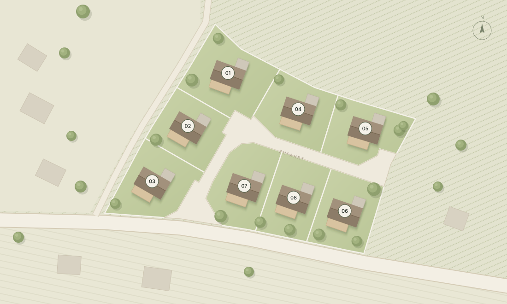

Schilcher.Häuser in Stainz
Stellen Sie sich vor, der Tag beginnt mit Morgennebel über den Weinbergen, der erste Kaffee schmeckt nach Ruhe und am Abend steht ein Glas Schilcher auf der Terrasse. Hier, in den Hügeln der Weststeiermark, ist Wohnen mehr als eine Adresse – es ist ein Lebensgefühl zwischen Wein, Kulinarik und Natur. Ob Rückzugsort, Familienzuhause oder Lebensmittelpunkt für die nächsten Jahrzehnte: Acht Grundstücke warten darauf, Ihr Ort zu werden.
Grundstück & Winzerhaus
Zwei Wege, ein Wunsch:
im Weinland leben
Das Grundstück
Acht Baugrundstücke zwischen 750 und 980 m² am Grünbaumgartenweg in Wald Süd, angebunden über eine eigene, ruhige Zufahrtsstraße. Für alle, die ihr Haus nach eigenen Vorstellungen planen und bauen möchten.
Das Winzerhaus
Zeitlose Architektur aus Holz, Stein und Glas, mit großzügigen Terrassen und Blick ins Grüne – auf Wunsch als durchdachtes Winzerhaus auf Ihrem Grundstück. Ausstattung und Grundriss werden gemeinsam mit Ihnen abgestimmt.
Konzept – vorbehaltlich finaler Planung.
Ihre Benefits
Was die Grundstücke in
Stainz bieten
-
Ruhige Lage
im Weinland -
In der Nähe
von Graz -
Wein, Kulinarik
& Natur -
Gute Infrastruktur
in Stainz
Ein Paradies im Westen: Stainz
Die Marktgemeinde Stainz liegt mitten im Schilcherland der Weststeiermark. Rund um den Ort reihen sich Weingüter, Buschenschänke und Wanderwege; im Zentrum mit Schloss Stainz finden sich Nahversorger, Schulen, Ärzte und Gastronomie – vom Grundstück aus in wenigen Minuten erreichbar.
Mit dem Auto erreichen Sie Graz in rund 35 Minuten, Klagenfurt in etwa eineinhalb Stunden.
Unterlagen sind in Vorbereitung und werden auf Anfrage zugesandt.
Lassen Sie sich
verzaubern …
Keyfacts
Stainz · Wald Süd
Schilcher Häuser
- Objekttyp
- 8 Baugrundstücke, optional mit Winzerhaus
- Widmung
- Platzhalter – Angabe folgt
- Grundstücksnummern, KG
- 554/1 – 554/8, KG 61246 Wald
- Grundstücksflächen
- 750 – 980 m², gesamt 6.532 m²
- Erschließung
- Eigene Zufahrtsstraße (Gst. 554/9)
- Adresse
- Grünbaumgartenweg, Wald Süd, 8510 Stainz

| Grundstück | Gst.-Nr. | Fläche | Preis | Status |
|---|
Flächen laut Vermessungsurkunde GZ 4329T/22. Preise auf Anfrage.
Häufig gestellte Fragen
1. Wie groß sind die Grundstücke?
Die acht Grundstücke sind zwischen 750 und 980 m² groß, zusammen 6.532 m². Die genaue Fläche jedes Grundstücks finden Sie in der Preisliste oben.
2. Kann ich nur ein Grundstück kaufen oder auch ein fertiges Haus?
Beides ist vorgesehen: das Grundstück allein, um selbst zu planen und zu bauen, oder das Grundstück mit einem Winzerhaus. Details zum Hauskonzept erhalten Sie auf Anfrage.
3. Wie sind die Grundstücke erschlossen?
Alle acht Grundstücke werden über eine eigene Zufahrtsstraße (Gst. 554/9) erschlossen. Laut Einreichprojekt sind dafür auch Kanal- und Wasserleitungen vorgesehen.
Platzhalter – Details zu Strom, Glasfaser und Anschlusskosten folgen.
4. Welche Widmung und Bebauungsbestimmungen gelten?
Platzhalter – Widmung, Bebauungsdichte und Bebauungsbestimmungen werden ergänzt.
5. Bin ich verpflichtet, innerhalb einer bestimmten Zeit zu bauen?
Platzhalter – Angabe folgt.
6. Wie weit ist es nach Stainz, Graz und Klagenfurt?
Ins Zentrum von Stainz sind es mit dem Auto nur wenige Minuten, nach Graz rund 35 Minuten und nach Klagenfurt etwa eineinhalb Stunden.
7. Ab wann kann gebaut werden?
Platzhalter – Zeitplan folgt.
Jetzt anfragen
Vielen Dank
Vielen Dank für Ihr Interesse. Wir melden uns persönlich bei Ihnen.